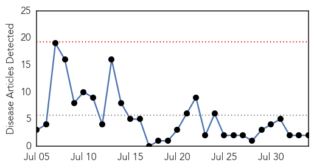
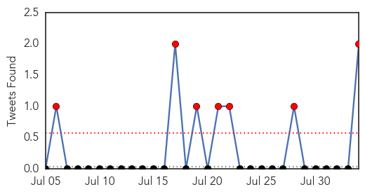
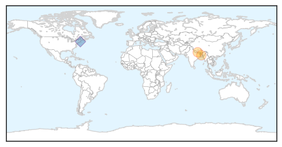
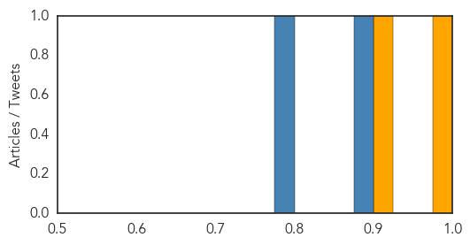
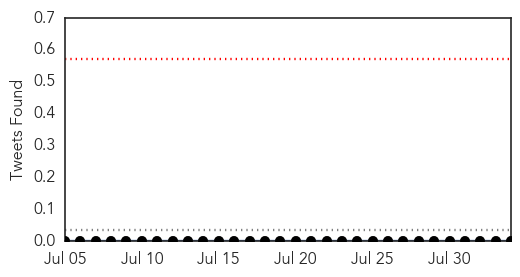

Cholera
30-Day Web Trend
0 alerts, 0 warnings

30-Day Twitter Trend
7 alerts, 0 warnings

Article Locations
Article Confidences
Top Articles:
Top Tweets:
- 0.889
- RT: Haiti gov response to cholera was terrible but great on Chikungunya. Why? Cholera only affects poor chik affects all.
- 0.782
- RT: Number of Haiti's cholera deaths=Ebola deaths worldwide since 2010. Haitian-Am. diaspora community speaks out: http://t.co/1MMZP…
Measles
30-Day Web Trend
0 alerts, 0 warnings

30-Day Twitter Trend
0 alerts, 0 warnings

Article Locations

Article Confidences

Top Articles:
- 0.981
- In Somalia, a wives' tale delays measles treatment
- 0.975
- CDC, WHO, Merck Documents Prove VACCINATED Are Spreading Virus
- 0.957
- DRC: MSF has vaccinated over 287,000 children against measles in four provinces - Democratic Republic of the Congo
- 0.520
- Vaccinations protect us all
- 0.504
- Rhode Island Mandates HPV Vaccine for Girls in 7th Grade
Top Tweets:
-
No tweets found for Aug 03, 2015